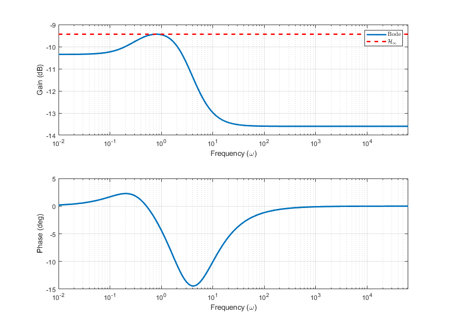
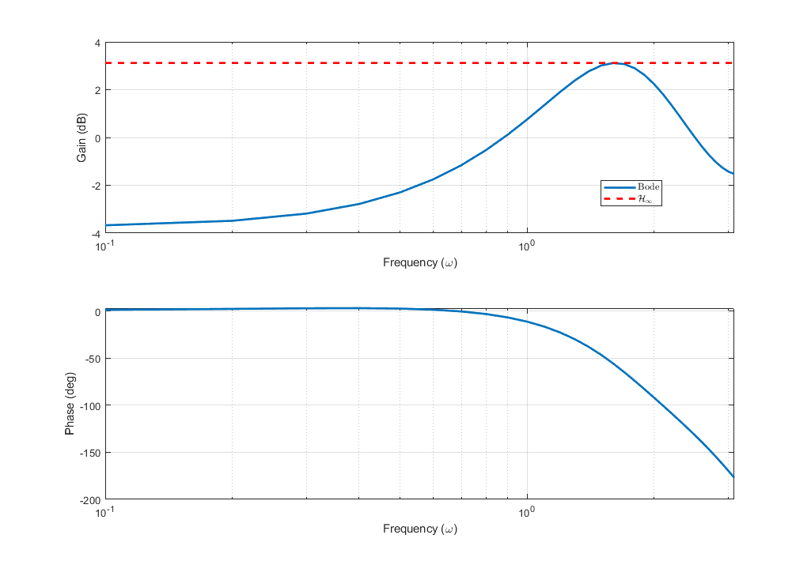

Introduction to $\mathcal{H_\infty}$ Robust Control via LMI
Prof. Dr. Marcos Rogério Fernandes
April 27, 2026
Objectives
The objectives of this lecture are to understand:
- Definition of $\mathcal{H}_\infty$ norm;
- LMI computation of $\mathcal{H}_\infty$ norm;
- Definition of Optimal $\mathcal{H}_\infty$ control;
- Definition of Robust $\mathcal{H}_\infty$ control (Polytopic and Norm-bounded);
- Examples;
References
- S. BOYD, L. GHAOUI, E. FERON, and V. BALAKRISHNAN. Linear Matrix Inequalities in System and Control Theory. SIAM, 1994.
- Lecture notes da disciplina IA892 - Análise e Controle de Sistemas Lineares por Desigualdades Matriciais Lineares (LMIs),
Profs. Ricardo C. L. F. Oliveira e Pedro L. D. Peres, da Faculdade de Engenharia Elétrica e de Computação (FEEC) da Universidade Estadual de Campinas (Unicamp). https://ricfow.fee.unicamp.br/IA892/ia892.htm
Continuous-time State-space Model
$$ \begin{aligned} \dot{x}&=Ax+B_w w\\ y&=Cx+Dw \end{aligned} $$ with $x\in\mathbb{R}^n$, $w\in\mathbb{R}^m$, $y\in\mathbb{R}^p$.
with $w$ as the disturbance (or noise) input and $y$ as the output.
MIMO Transfer Function
$$ G(s)=C(sI-A)^{-1}B_w+D=\begin{bmatrix} G_{11}(s) & \cdots & G_{1m}(s)\\ G_{21}(s) & \cdots & G_{2m}(s)\\ \vdots & \ddots & \vdots\\ G_{p1}(s) & \cdots & G_{pm}(s) \end{bmatrix} $$
such that $G_{ij}(s)$ is the transfer function from the $j$-th input to the $i$-th output.
$\mathcal{H}_\infty$ norm (Frequency domain)
$$ \|G\|_\infty=\max_{\omega\in\mathbb{R}} \sigma_\text{max}(G(j\omega)) $$
where $\sigma_\text{max}(G(j\omega))$ is the maximum singular value of the transfer function $G(j\omega)$.
Obs:
$$
\sigma_i(G(j\omega))=\sqrt{\lambda_i(G(j\omega)^*G(j\omega))}
$$
$\mathcal{H}_\infty$ norm (Frequency domain)
For SISO systems, the $\mathcal{H}_\infty$ norm is given by:
$$ \|G\|_\infty=\max_{\omega\in\mathbb{R}} |G(j\omega)| $$
It is the maximum gain of the system over all frequencies.$\mathcal{H}_\infty$ norm

$\mathcal{H}_\infty$ norm (Time domain)
$$ \|y(t)\|_2< \gamma \|w(t)\|_2 $$
$\mathcal{H}_\infty$ norm (Time domain)
$$ \|y(t)\|_2^2< \gamma^2 \|w(t)\|_2^2 $$
$\mathcal{H}_\infty$ norm (Time domain)
$$ \int_{-\infty}^{\infty} y(t)^\trp y(t) dt < \gamma^2 \int_{-\infty}^{\infty} w(t)^\trp w(t) dt $$
$\mathcal{H}_\infty$ norm (Time domain)
Definition of the $\mathcal{H}_\infty$ norm in the time domain:
$$ \|G\|_\infty < \gamma \\ \Leftrightarrow \\ \int_{-\infty}^{\infty} y(t)^\trp y(t) dt < \gamma^2 \int_{-\infty}^{\infty} w(t)^\trp w(t) dt $$
$\mathcal{H}_\infty$ norm and Stability
Can a Unstable System have a finite $\mathcal{H}_\infty$ norm?
$$ \|G\|_\infty< \gamma \\ \Leftrightarrow \\ \int_{-\infty}^{\infty} y(t)^\trp y(t) dt < \gamma^2 \int_{-\infty}^{\infty} w(t)^\trp w(t) dt $$$\mathcal{H}_\infty$ norm and Stability
Consider the Lyapunov function $V(x)=x^\trp P x$ with $P \succ 0$.
In addition, require that
$$ \dot{V} < 0 $$
$\mathcal{H}_\infty$ norm and Stability
Consider the Lyapunov function $V(x)=x^\trp P x$ with $P \succ 0$.
In addition, require that
$$ \dot{V} < \gamma^2 w(t)^\trp w(t)-y(t)^\trp y(t) $$
$\mathcal{H}_\infty$ norm and Stability
Consider the Lyapunov function $V(x)=x^\trp P x$ with $P\succ 0$.
In addition, require that
$$ \dot{V}+y(t)^\trp y(t)-\gamma^2 w(t)^\trp w(t) < 0 $$
$\mathcal{H}_\infty$ norm and Stability
Note that
$$ \int_0^\infty \Bigl(\dot{V}+y(t)^\trp y(t)-\gamma^2 w(t)^\trp w(t)\Bigr) dt< 0 $$
$\mathcal{H}_\infty$ norm and Stability
Note that
$$ V(x(\infty))-V(x(0))+\int_0^\infty y(t)^\trp y(t)dt -\gamma^2 \int_0^\infty w(t)^\trp w(t)< 0 $$
$\mathcal{H}_\infty$ norm and Stability
Note that
$$ \int_0^\infty y(t)^\trp y(t)dt -\gamma^2 \int_0^\infty w(t)^\trp w(t)< 0 $$
$\mathcal{H}_\infty$ norm and Stability
Note that
$$ \int_0^\infty y(t)^\trp y(t)dt < \gamma^2 \int_0^\infty w(t)^\trp w(t) \quad\square $$
$\mathcal{H}_\infty$ norm and Stability
$\mathcal{H}_\infty$ norm (Bounded Real Lemma)
$$ \Leftrightarrow \left[\begin{array}{cc} A^{\trp} P+P A+C^{\trp} C & P B_w+C^{\trp} D \\ B_w^{\trp} P+D^{\trp} C & D^{\trp} D-\gamma^2 \mathbf{I} \end{array}\right]\prec 0 $$
and $$ \|G\|_\infty< \gamma $$$\mathcal{H}_\infty$ norm via LMI
$$ \begin{align*} & \quad\quad\quad\quad \quad\quad \min_{\mu,P=P^\trp \succ 0} \mu\\ \text{s.t.} & \left[\begin{array}{cc} A^{\trp} P+P A+C^{\trp} C & P B_w+C^{\trp} D \\ B_w^{\trp} P+D^{\trp} C & D^{\trp} D-\mu \mathbf{I} \end{array}\right]\prec 0 \end{align*} $$
and $$ \|G\|_\infty= \sqrt{\mu} $$MATLAB Example: $\mathcal{H}_\infty$ norm (CT)
% Continuous-time H-infinity norm via LMI (YALMIP)
P = sdpvar(n,n);
mu = sdpvar(1,1);
LMI = [P >= 1e-6*eye(n), ...
[A'*P + P*A + C'*C, P*B_w + C'*D; ...
B_w'*P + D'*C, D'*D - mu*eye(m)] <= -1e-6*eye(n+m)];
optimize(LMI, mu);
gamma = sqrt(value(mu));
Definition: Norm-Bounded Uncertainty
$$ \dot{x}(t) = (A + \Delta A(t))x(t) $$ where the uncertainty is structured as: $$ \Delta A(t) = F \Delta(t) E $$ with $\|\Delta(t)\| \le \gamma^{-1} \iff \Delta(t)^\trp \Delta(t) \preceq \gamma^{-2} I$.
$F$ and $E$ are known constant matrices that define the structure of the uncertainty.
Petersen's Lemma (Matrix Cross Product)
For any matrices $X$, $Y$ and any $\epsilon > 0$, the following inequality holds:
$$ X^\trp Y + Y^\trp X \preceq \epsilon X^\trp X + \epsilon^{-1}Y^\trp Y $$
This lemma is fundamental for eliminating the unknown $\Delta(t)$.
Step-by-step Derivation (1/5)
- Start with Lyapunov derivative for the uncertain system:
$$ (A + F \Delta(t) E)^\trp P + P (A + F \Delta(t) E) \prec 0 $$
Step-by-step Derivation (2/5)
- Distribute terms:
$$ A^\trp P + E^\trp \Delta(t)^\trp F^\trp P + PA + PF\Delta(t) E \prec 0 $$
Step-by-step Derivation (3/5)
- Regroup and apply Petersen's Lemma with $X^\trp=PF\Delta(t)$ and $Y=E$:
$$ (A^\trp P + PA) + \underbrace{PF\Delta(t) E + E^\trp \Delta(t)^\trp F^\trp P}_{X^\trp Y + Y^\trp X} \prec 0 $$
$$ \dots \preceq \epsilon \underbrace{PF\Delta(t)\Delta(t)^\trp F^\trp P}_{X^\trp X} + \epsilon^{-1} \underbrace{E^\trp E}_{Y^\trp Y} $$
Step-by-step Derivation (4/5)
- Using $\Delta(t)\Delta(t)^\trp \preceq \gamma^{-2} I$, we get the sufficient condition:
$$ A^\trp P + PA + \epsilon \gamma^{-2} PFF^\trp P + \epsilon^{-1} E^\trp E \prec 0 $$
Step-by-step Derivation (5/5)
- Let $\tilde{P} = \epsilon P \succ 0$:
$$ A^\trp \tilde{P} + \tilde{P}A +\gamma^{-2} \tilde{P}FF^\trp \tilde{P} + E^\trp E \prec 0 $$
LMI Condition for Robust Stability
$$ \begin{bmatrix} A^\trp \tilde{P} + \tilde{P} A + E^\trp E & \tilde{P} F \\ F^\trp \tilde{P} & - \gamma^{2}I \end{bmatrix} \prec 0 $$
This is a Linear Matrix Inequality (LMI) in the single variable $\tilde{P} \succ 0$.
Comparison: Robust Stability vs. $\mathcal{H}_\infty$ Norm
Robust stability for $\dot{x}=(A+F\Delta E)x$ with $\|\Delta\|\le \gamma^{-1}$ is equivalent to:
$$ \|E(sI-A)^{-1}F\|_\infty < \gamma $$
| Uncertainty Model | $\mathcal{H}_\infty$ Analogy |
|---|---|
| $F$ (Uncertainty input) | $B_w$ (Disturbance input) |
| $E$ (Uncertainty output) | $C$ (System output) |
Discrete-time State-space Model
$$ \begin{aligned} x_{k+1}&=Ax_k+B_w w_k\\ y_k&=Cx_k+Du_k \end{aligned} $$ with $x\in\mathbb{R}^n$, $w\in\mathbb{R}^m$, $y\in\mathbb{R}^p$.
with $w$ as the disturbance (or noise) input and $y$ as the output.
MIMO Transfer Function
$$ G(z)=C(zI-A)^{-1}B_w+D=\begin{bmatrix} G_{11}(z) & \cdots & G_{1m}(z)\\ G_{21}(z) & \cdots & G_{2m}(z)\\ \vdots & \ddots & \vdots\\ G_{p1}(z) & \cdots & G_{pm}(z) \end{bmatrix} $$
such that $G_{ij}(z)$ is the transfer function from the $j$-th input to the $i$-th output.
$\mathcal{H}_\infty$ norm (Frequency domain)
$$ \|G\|_\infty=\max_{\omega\in[-\pi,\pi]} \sigma_\text{max}(G(e^{j\omega})) $$
where $\sigma_\text{max}(G(e^{j\omega}))$ is the maximum singular value of the transfer function $G(e^{j\omega})$.
Obs:
$$
\sigma_i(G(e^{j\omega}))=\sqrt{\lambda_i(G(e^{j\omega})^*G(e^{j\omega}))}
$$
$\mathcal{H}_\infty$ norm (Frequency domain)
For SISO systems, the $\mathcal{H}_\infty$ norm is given by:
$$ \|G\|_\infty=\max_{\omega\in[-\pi,\pi]} |G(e^{j\omega})| $$
It is the maximum gain of the system over all frequencies.$\mathcal{H}_\infty$ norm

$\mathcal{H}_\infty$ norm (Time domain)
$$ \|y_k\|_2< \gamma \|w_k\|_2 $$
$\mathcal{H}_\infty$ norm (Time domain)
$$ \|y_k\|_2^2< \gamma^2 \|w_k\|_2^2 $$
$\mathcal{H}_\infty$ norm (Time domain)
$$ \sum_{k=-\infty}^{\infty} y_k^\trp y_k < \gamma^2 \sum_{k=-\infty}^{\infty} w_k^\trp w_k $$
$\mathcal{H}_\infty$ norm (Time domain)
Definition of the $\mathcal{H}_\infty$ norm in the time domain:
$$ \|G\|_\infty< \gamma \\ \Leftrightarrow \\ \sum_{k=-\infty}^{\infty} y_k^\trp y_k < \gamma^2 \sum_{k=-\infty}^{\infty} w_k^\trp w_k $$
$\mathcal{H}_\infty$ norm and Stability
Can a Unstable System have a finite $\mathcal{H}_\infty$ norm?
$$ \|G\|_\infty< \gamma \\ \Leftrightarrow \\ \sum_{k=-\infty}^{\infty} y_k^\trp y_k < \gamma^2 \sum_{k=-\infty}^{\infty} w_k^\trp w_k $$$\mathcal{H}_\infty$ norm and Stability
Consider the Lyapunov function $V_k(x_k)=x_k^\trp P x_k$ with $P \succ 0$.
In addition, require that
$$ V_{k+1}(x_{k+1})-V_k(x_k)+y_k^\trp y_k-\gamma^2 w_k^\trp w_k < 0 $$
$\mathcal{H}_\infty$ norm and Stability
$\mathcal{H}_\infty$ norm (Bounded Real Lemma)
$$ \Leftrightarrow \left[\begin{array}{cc} A^{\trp} P A -P+C^{\trp} C & A^\trp P B_w+C^{\trp} D \\ B_w^{\trp} P A+D^{\trp} C & B_w^\trp P B_w+D^{\trp} D-\gamma^2 \mathbf{I} \end{array}\right]\prec 0 $$
and $$ \|G\|_\infty< \gamma $$$\mathcal{H}_\infty$ norm via LMI
$$ \begin{align*} & \quad\quad \quad\quad\quad \quad\quad \min_{\mu,P=P^\trp \succ 0} \mu\\ \text{s.t.} & \left[\begin{array}{cc} A^{\trp} P A -P+C^{\trp} C & A^\trp P B_w+C^{\trp} D \\ B_w^{\trp} P A+D^{\trp} C & B_w^\trp P B_w+D^{\trp} D-\mu \mathbf{I} \end{array}\right]\prec 0 \end{align*} $$
and $$ \|G\|_\infty= \sqrt{\mu} $$MATLAB Example: $\mathcal{H}_\infty$ norm (DT)
% Discrete-time H-infinity norm via LMI (YALMIP)
P = sdpvar(n,n);
mu = sdpvar(1,1);
LMI = [P >= 1e-6*eye(n), ...
[A'*P*A - P + C'*C, A'*P*B_w + C'*D; ...
B_w'*P*A + D'*C, B_w'*P*B_w + D'*D - mu*eye(m)] <= -1e-6*eye(n+m)];
optimize(LMI, mu);
gamma = sqrt(value(mu));
Continuous-time State-space Model
$$ \begin{aligned} \dot{x}&=Ax+B_u u+B_w w\\ y&=Cx+Du \end{aligned} $$ with $x\in\mathbb{R}^n$, $u\in\mathbb{R}^m$, $w\in\mathbb{R}^m$, $y\in\mathbb{R}^p$.
with $w$ as the disturbance (or noise) input and $y$ as the output.
Continuous-time $\mathcal{H}_\infty$ Control Design
$$ \begin{aligned} \dot{x}&=(A+B_u K)x+B_w w\\ y&=(C+DK)x\\ G(s)&=(C+DK)(sI-(A+B_u K))^{-1}B_w \end{aligned} $$
is stable and minimizes the $\mathcal{H}_\infty$ norm.H-infinity norm of the Closed-loop system
$$ \left[\begin{array}{cc} \tilde{A}^{\trp} P+P \tilde{A}+\tilde{C}^{\trp} \tilde{C} & P B_w \\ B_w^{\trp} P & -\gamma^2 \mathbf{I} \end{array}\right]\prec 0 $$
Application of Schur Complement
$$ \left[\begin{array}{cc} \tilde{A}^{\trp} P+P \tilde{A}+\tilde{C}^{\trp} \tilde{C} & P B_w \\ B_w^{\trp} P & -\gamma^2 \mathbf{I} \end{array}\right]\prec 0 \\ \Leftrightarrow \left[\begin{array}{cc} \tilde{A}^{\trp} P+P \tilde{A} & P B_w \\ B_w^{\trp} P & -\gamma^2 \mathbf{I} \end{array}\right]-\left[\begin{array}{cc} \tilde{C}^\trp \\ 0 \end{array}\right](-\mathbf{I})\left[\begin{array}{cc} \tilde{C} & 0 \end{array}\right]\prec 0\\ \Leftrightarrow \left[\begin{array}{cc} \tilde{A}^{\trp} P+P \tilde{A} & P B_w & \tilde{C}^\trp \\ B_w^{\trp} P & -\gamma^2 \mathbf{I} & 0\\ \tilde{C} & 0 & -I \end{array}\right]\prec 0 $$
Congruence Transformation
$$ \begin{bmatrix} P^{-1} & 0 & 0\\ 0 & I & 0\\ 0 & 0 & I \end{bmatrix} \left[\begin{array}{cc} \tilde{A}^{\trp} P+P \tilde{A} & P B_w & \tilde{C}^\trp \\ B_w^{\trp} P & -\gamma^2 \mathbf{I} & 0\\ \tilde{C} & 0 & -I \end{array}\right]\begin{bmatrix} P^{-1} & 0 & 0\\ 0 & I & 0\\ 0 & 0 & I \end{bmatrix}\prec 0\\ \Leftrightarrow \left[\begin{array}{cc} P^{-1}\tilde{A}^{\trp}+\tilde{A}P^{-1} & B_w & P^{-1}\tilde{C}^\trp \\ B_w^{\trp} & -\gamma^2 \mathbf{I} & 0\\ \tilde{C}P^{-1} & 0 & -I \end{array}\right]\prec 0 $$
Expansion of terms
Thus,
$$ \small \left[\begin{array}{cc} P^{-1}(A+B_u K)^{\trp}+(A+B_u K)P^{-1} & B_w & P^{-1}(C+DK)^\trp \\ \star & -\gamma^2 \mathbf{I} & 0\\ \star & \star & -I \end{array}\right]\prec 0\\ \Rightarrow \left[\begin{array}{cc} P^{-1}A^\trp+P^{-1}K^{\trp}B_u^\trp+(\star)^\trp & B_w & P^{-1}(C+DK)^\trp \\ \star & -\gamma^2 \mathbf{I} & 0\\ \star & \star & -I \end{array}\right]\prec 0\\ $$
Continuous-time $\mathcal{H}_\infty$ Control
Let $W=P^{-1}$ and $Z=KW$, then
$$ \left[\begin{array}{cc} WA^\trp+AW+Z^\trp B_u^\trp+B_u Z & B_w & WC^\trp +Z^\trp D^\trp \\ \star & -\gamma^2 \mathbf{I} & 0\\ \star & \star & -I \end{array}\right]\prec 0\\ $$
Continuous-time $\mathcal{H}_\infty$ Optimal Control
$$\small
\begin{align*}
& \quad\quad\quad\quad\quad \quad\quad \min_{\mu,Z,W=W^\trp \succ 0} \mu\\
\text{s.t.} &
\left[\begin{array}{cc}
WA^\trp+AW+Z^\trp B_u^\trp+B_u Z & B_w & WC^\trp +Z^\trp D^\trp \\
\star & -\mu \mathbf{I} & 0\\
\star & \star & -I
\end{array}\right]\prec 0\\
\end{align*}
$$
and $K=ZW^{-1}$.
In addition, the $\mathcal{H}_\infty$ norm satisfies $\|G\|_\infty= \sqrt{\mu}$.
Continuous-time Polytopic State-space Model
$$ \begin{aligned} \dot{x}&=A(\alpha)x+B_u(\alpha)u+B_w(\alpha)w\\ y&=C(\alpha)x+D(\alpha)w \end{aligned} $$ with $x\in\mathbb{R}^n$, $u\in\mathbb{R}^m$, $w\in\mathbb{R}^m$, $y\in\mathbb{R}^p$.
with $w$ as the disturbance (or noise) input and $y$ as the output.
Continuous-time Robust $\mathcal{H}_\infty$ Control
$$\small
\begin{align*}
& \quad\quad\quad\quad\quad \quad\quad \min_{\mu,Z,W=W^\trp \succ 0} \mu\\
\text{s.t.} &
\left[\begin{array}{cc}
WA_i^\trp+Z^\trp B_{u,i}^\trp+(\star)^\trp & B_{w,i} & WC_i^\trp +Z^\trp D_i^\trp \\
\star & -\mu \mathbf{I} & 0\\
\star & \star & -I
\end{array}\right]\prec 0\\
\end{align*}
$$
and $K=ZW^{-1}$.
In addition, the $\mathcal{H}_\infty$ norm satisfies $\|G\|_\infty\le \sqrt{\mu}$.
Homework (T8)
- Derive the LMI for the $\mathcal{H}_\infty$ Robust Control in discrete time.
- Write a summary with your own words about the derivation in LaTeX and send it via e-disciplina.